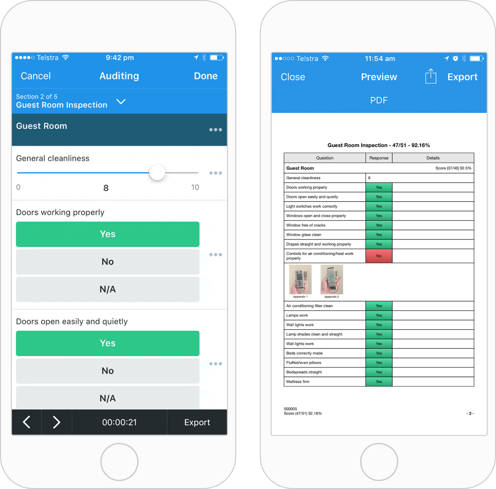

Enabling potential customers to experience iAuditors aha moment
The following case study details a project I did as part of a 24-hour hackathon back in 2017 at SafetyCulture. At the time, I was working as a web designer and developer within the marketing team.
A products aha moment is a powerful thing. It's the defining moment when a user experiences, first hand, the value and potential of a product. An aha moment is often pivotal in activating a new customer or retaining a current one. The first aha moment usually occurs during the customers' initial use of the product. Often, it is baked directly into the onboarding flow.
iAuditors aha moment
SafetyCultures flagship product, iAuditor, is a powerful inspection app. It is used to create custom checklists, perform inspections, and generate instant reports. When people first pick up iAuditor, they are typically looking to digitise a paper-based inspection process.
iAuditors aha moment takes place when the user completes their first inspection. On completion, an inspection report is instantly available for the user to share. Previously, with their paper-based system, the customer would have spent hours if not days generating this report.
An iAuditor user needs to navigate six steps to reach this elusive aha moment:
- Discover iAuditor
- Download the app
- Create an account
- Build or download an inspection template
- Conduct an inspection
- View the automatically generated report
Is it possible to simulate an aha moment pre-sign up?
Like many products, iAuditor has a marketing website that promotes the product and how using it will make the consumers life better. The material on the marketing site does a great job explaining and showcasing the value of iAuditor. However, it doesn't allow someone to experience the value first hand, which we know is key to creating a powerful aha moment.
Can we allow someone to experience iAuditor first hand, during the discovery phase, without having to get the app itself?
This was the question that myself and a few members of the marketing team at SafetyCulture wanted to answer during the companies annual 24-hour hackathon back in 2017. We believed that experiencing an aha moment during the discovery phase could lead to more conversions.
We created an interactive demo of iAuditor that would live on the marketing website.
Ideally, we would remove the current barrier of making the user create an account before trying the product. Due to business reasons, this was not an option. Instead, we decided to incorporate an interactive demo of the inspection experience on the marketing website. The demo would showcase how easy it is to conduct an inspection using iAuditor as well as the variety of question types the product supports. Most importantly, the demo would enable the user to experience the aha moment of having a report generated immediately upon completion of the inspection.

We created five different inspections as part of the demo — one for, construction, manufacturing, hospitality, retail and transport. Tailoring various inspections allowed us to create a relatable experience that was reflective of the language and scenarios of customers in each of our key industries.
While iAuditor can be used to conduct inspections via a desktop device, we know that we retain more users if they use our mobile app. With this in mind, we encased the demo inspections within a graphic of a tablet device. We hoped that this would reinforce that iAuditor was a mobile solution.
Having an interactive demo doesn't work if no one interacts with it.
By the end of the 24-hour hackathon, we had a simple interactive demo that I built with Javascript, HTML and CSS. Unfortunately, we were unable to invest much time into promoting, maintaining and improving this project. As such, we were unable to validate if this experience would mimic the aha moment that occurs post signup.
If I could do this project over again, I would spend more time exploring and testing out how we could attract visitors to interact with the demo itself. I still believe that an interactive demo like the one we created has the potential to surface the aha moment during the discovery phase.